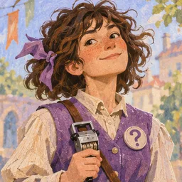
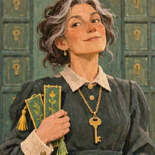
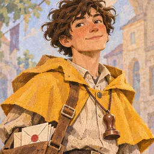

Одна витрина обещает город свободных первооткрывателей, другая — город людей, бесконечно возвращающихся по старым следам. Обе показывают исправные возможные будущие одного музейного фонаря. Найдите различие в исходных предпосылках, придумайте прогноз, который можно опровергнуть, и решите, какой опыт над собственным завтра стоит провести.

Если партия изменила план
Перед чтением вступления сверьте место героев, присутствующих людей и предметы с итогом прошлого вечера. Если условия встречи отпали, сыграйте последствия там, где находится партия. Событие по расписанию может произойти за кадром. Герои узнают о нём от тех, кто был на месте.
Вечер 6. Если опыт опроверг прогноз раньше полуночи
Оставьте первую запись рядом с наблюдением, которое ей противоречит. Предложите задать витрине новый вопрос или завершить опыт на установленной границе. На выходе один билет может хранить оба результата.
Группа отказалась от задания
Экспедицию вести не будем. Предложим музею публичную полку для неудавшихся опытов. Кладём на музейную полку проверяемый несбывшийся прогноз. На полке стоят два несовместимых прогноза. Посетитель может проверить их, не записываясь в экспедицию.
Игроки раскрыли тайну раньше
Раскроем исходную карточку цели и оба полных листа; повторим один опыт с другим назначением. Доступные свидетельства — Карточка, которую помнит фонарь, Полные листы противоположных прогнозов. В режиме памяти стрелка повторяет прежний ответ даже при другой цели. Это можно отличить от нового прогноза. Меняем сегодняшнюю цель, сохраняя вчерашнюю карточку. Фонарь помнит прежнюю цель. Какую цель проверять в полночь, участники решают заново.
Партия уступила поле
Смотрители остановили учебный опыт и забрали время показа. Просим смотрителя пометить, какие результаты опыта не удалось получить. Публикуем незавершённый протокол с пустой графой результата. В полночь предлагаем новый вопрос без обещания ответа.
Карман ведущего
Для игры без подготовки: что говорят люди, места в стороне от главной дороги и прохожие. Пометки о правде слухов — только для ведущего; сказанное за столом становится фактом мира, лишь когда вы его подтвердите.
Слухи
«Витрина показывает возможность, а не судьбу. Это у нас каждый школьник знает, хоть спросите любого на мосту».
Правда. Главное правило музея и мира: будущие в витринах — условные модели, созданные сейчас. Слух помогает в первом вечере успокоить игрока, который боится, что витрина назначит его герою профессию.
«Кто заглянет в музейную линзу, тот увидит своё настоящее завтра. Только никому не рассказывай, а то не сбудется».
Неправда. Суеверие: линзы не знают будущего героя, а личные будущие появляются только по согласию игрока. Его легко опровергает Данка или табличка на билете; никуда в сторону от сюжета слух не ведёт.
«В одной витрине подделка. Не могут же из одного фонаря выйти два разных города».
Неправда. Неправда: обе модели исправны и корректны при своих предпосылках, никто ничего не подменял. Слух полезен во втором вечере: он подталкивает искать не виноватого, а различие в исходных листах.
«Фонарь в садах ничего не забывает. Где человек ходил вчера, туда и укажет сегодня, хоть ты ему кол на голове теши».
Правда. Так и есть: в режиме памяти фонарь читает прежнюю карточку и воспроизводит прежний путь. Слух ничего не говорит о том, полезна ли эта память; это герои проверяют в садах и мастерской.
«Лев Кром говорит, что хороший совет всегда начинается с нового вопроса. Он в этом уверен, как в своей типографской краске».
Отчасти правда. Это и правда любимая догадка Льва, но он сам знает, что она не проверена, особенно для целей вне каталога. На причале и площадке первого шага её можно уточнить; Лев спокойно примет опровержение.
«Поздний рейс отходит, когда соберётся хотя бы один пассажир, который знает, куда ему нужно».
Отчасти правда. Это ладомерская шутка перевозчиков, а не расписание: рейсы ходят как обычно. Но смысл её точен для четвёртого вечера — совет полезен, когда известна нынешняя цель.
«В Зале неотправленных писем опустить письмо в корзину непрочитанным так же достойно, как прочитать. Никто и бровью не поведёт».
Правда. Обычай зала из описания места. Слух напоминает о праве отказаться от личного письма; общественный пример даёт ту же улику, так что отказ ничего не отнимает.
«Если в музее заблудишься в будущем, можно там и остаться. Говорят, кто-то так и не вернулся в атрий».
Неправда. Неправда: каждая прогулка имеет выход в исходный зал, а на билете напечатано «Возвращение обязательно». Данка с удовольствием покажет стрелку на обороте билета.
«Медные часы на крышах врут про дождь только тогда, когда им самим лень. Синее облачко выдвинулось — бери зонт».
Отчасти правда. Часы Ладомера и правда показывают погоду, а облачко выдвигается перед дождём. Про лень — горожанская шутка. Удобная мелочь для причала или двора равных стульев.
«В архиве ничего не выбрасывают и ничего не переписывают. Ошибся — новую бумагу кладут рядом со старой».
Правда. Так устроены архив и мастерская: прежние результаты не заменяются после исправления гипотезы. Слух готовит к третьему и восьмому вечерам, где прогноз первого вечера ложится рядом с наблюдением.
«Во дворе равных стульев начальство не садится в середину. Там и середины-то нет, все в круг».
Правда. Давний обычай двора: стулья одной высоты стоят кругом, председательского кресла нет. Подходит для шестого вечера, чтобы напомнить, что возраст и должность не дают решающего голоса.
Места в стороне
Читальный навес у Липовой набережной
Деревянный навес над тремя полками книг прямо у воды. Взявший книгу оставляет на её месте закладку для следующего читателя, и некоторые закладки живут здесь дольше книг: на одной выведено «Дочитай за меня». В дождь полки накрывают клеёнкой, а читатели садятся на перевёрнутые лодки. Отсюда хорошо слышен гудок позднего рейса и видно окна музея.
Будка кассира в депо
Низкая застеклённая будка у входа в атрий, где касса печатает общие билеты. Окошко нарочно сделано у самого пола, чтобы до него дотянулся любой гость. Внутри на гвоздике висит связка старых трамвайных билетов, пробитых компостером в виде звёздочки. Кассир иногда отдаёт такой билет ребёнку на память, но только если тот сам спросит, зачем он нужен.
Мост с часовой башенкой
Горбатый мост через главную протоку, на середине которого стоит крошечная часовая башенка. Её медные часы показывают не время, а погоду на завтра, и горожане сверяются с ними, прежде чем развешивать бельё. Под мостом в тихие вечера собираются лодочники и спорят, чьи часы точнее. На перилах выцарапаны отметки самых высоких паводков.
Кладовая войлочных чехлов
Тесная комнатка рядом с мастерской, где на полках лежат войлочные чехлы для линз, подписанные по размерам. Здесь всегда тепло и сухо, и пыль сюда не заходит. Реставраторы забегают сюда выпить чаю из термоса и переждать, пока подсохнет лак. На двери висит табличка «Линзы спят», и стучать в неё принято тихо.
Разворотная петля под каштаном
Обрывок старых трамвайных рельсов на площади у читального двора, свёрнутый в петлю, где когда-то разворачивались вагоны. Теперь между рельсами растёт трава, а дети ходят по ним, раскинув руки, как по канату. Старики помнят, как здесь звенел колокол перед поворотом. Говорят, если пройти всю петлю, ни разу не оступившись, вернёшься туда же, откуда начал, — и это чистая правда.
Прохожие
Фома Компостер
Сухощавый старик в фуражке бывшего кондуктора, с медным компостером на цепочке и карманами, полными пробитых билетов.
«Билет без дырочки — это не билет, а обещание. Давайте пробью, на удачу».
Может рассказать: Помнит, как музей открыли в бывшем трамвайном депо и что рельсы в атрии оставили нарочно, ничего не разбирая.
Лукерья Калачница
Пышная женщина с корзиной тёплых калачей, повязанной полотенцем; на щеке у неё мука.
«Сорок лет пеку одно и то же, а покупатели всё равно спрашивают, нет ли новенького».
Может рассказать: Что её калачи по вечерам берут перевозчики позднего рейса и что музейным волонтёрам она всегда оставляет самые румяные.
Петя Флюгер
Вихрастый мальчишка лет двенадцати, который бегает по мостам с бумажной вертушкой и всем сообщает, откуда дует ветер.
«С реки дует! Значит, часы скоро облачко выдвинут, вот увидите».
Может рассказать: Что медные часы на крышах выдвигают синее облачко перед дождём, и может показать, на какой крыше часы видно лучше всего.
Зинаида Переплёт
Строгая женщина в нарукавниках, с очками на шнурке и стопкой книг, перевязанных бечёвкой.
«Книгу берут — закладку оставляют. Иначе как следующий узнает, что тут уже кто-то был?»
Может рассказать: Что в открытых читальных дворах взявший книгу оставляет закладку следующему читателю, и рассказывает, какие закладки ей попадались.
Арсений Весло
Молодой лодочник в закатанных штанах и вязаной шапке, с веслом на плече и мокрыми по колено сапогами.
«Куда везти? Только не говорите „куда обычно“ — я вчерашних желаний не вожу».
Может рассказать: Что под музейным окном у настоящего причала есть крытая рампа для тележек и колясок и что вдоль воды проложена безопасная дорожка.
Устинья Прищепка
Бойкая старушка в цветастом платке, которая развешивает бельё во дворе напротив музея и всё видит из-за простыней.
«Я вашу полночь отсюда пересмотрю, мне из-за простыни всё видать».
Может рассказать: Что в вечер премьеры в музей придут и горожане в домашних шарфах, и дети, и что двери депо на эту ночь не закрывают.
За десять минут до первой игры
- Откройте первый вечер, прочитайте правду мира и участников. Остальные вечера — планы, их исход решают игроки.
- Выберите пакет под фактическое число игроков. Первые три героя — готовое ядро; остальные добавляются по порядку. Возраст игрока не определяет героя.
- Согласуйте темы, длительность и сигнал паузы. Передайте игрокам только players.html; раздатки выдавайте по отдельности после указанного открытия.
- Откройте Мастерскую проекта, создайте личный черновик и импортируйте выбранный JSON через загрузку пакета. Проверьте состав и начало в предпросмотре. Запуск кампании подтверждает ведущий штатным действием.
- Откройте иллюстрацию завязки отдельно. Портреты героев входят в файл для игроков, портреты встречных — в книгу ведущего. Тактические схемы доступны в разделе карт.
Формат и темы
8 вечеров; Около 150 минут: 10 минут приветствия и повторения, три сцены по 40 минут, перерыв 10 минут после второй сцены и 10 минут завершения. При усталости переносите последнюю сцену, не сокращая право выбора.
В городе Ладомере часы показывают время и погоду, а музейные линзы открывают прогулки по возможным будущим. Это сказочная хронофантастика на обычных правилах фэнтези: заклинания выглядят как световые чертежи, оружие — как сценические инструменты. Все герои третьего уровня. Особых правил путешествия во времени, изменения прошлого или технологического взлома нет.
Удивление, путешествия по несовпадающим завтра, азарт честного опыта и тёплая музейная ирония. Ошибочная гипотеза может привести к открытию; красивый прогноз не требует веры и не назначает судьбу.
- Память о прежнем успехе и право захотеть другого
- Различие между наблюдением, прогнозом и скрытой предпосылкой
- Ценность опровергнутой гипотезы
- Цена решения на основании ограниченного опыта
Границы
- Для смешанной группы подростков и взрослых: нет натуралистического насилия, сексуального содержания, угроз детям, необратимого стирания личности или обязательной семейной утраты.
- Личные будущие полностью вымышлены и предлагаются только с согласия игрока. Не используйте реальные страхи, болезни, оценки, карьерные ожидания или отношения участников.
- Любой участник может сказать «стоп», написать ведущему или показать ладонь; сцена меняется без объяснения причин. Можно пропустить личное письмо и получить равноценную общую улику.
- Ни один возраст не означает мудрость, беспомощность или власть. Изображения взрослых героев в будущем не требуют их успеха, брака, родительства или определённой профессии.
Люди за столом
- Начинайте каждый вечер с выбора границ и одного вопроса о вымышленном городе. Возраст игрока не определяет возраст героя или класс. Первые три героя дают полный состав; дополнительные места добавляют взгляды, а не ключи к сюжету.
- Перед решением все получают минуту подумать и могут написать выбор, сказать его или пасовать. Первый говорящий меняется по кругу каждую сцену; взрослый не становится руководителем автоматически. Ведущий читает записки без оценивания их стиля.
- Каждому предложению давайте два равноправных входа: «Кому это поможет сегодня?» и «Кто понесёт цену через месяц?». Оба вопроса влияют на одну договорённость; более сложная речь не получает дополнительных прав.
- При 3–4 игроках распределяйте исследование, разговор и запись между всеми. При 5–7 создавайте две временные группы и переключайте внимание после одного действия каждого; один раунд наблюдений завершается общим сбором у обозначенного стола, без отдельной долгой игры.
- Перед опытом каждый может предложить прогноз словами, стрелкой или рисунком. Запишите, что меняется, что остаётся прежним и какое наблюдение опровергнет прогноз. Ведущий не подгоняет результат под любимую гипотезу и не превращает научную лексику в преимущество взрослого; достаточно вопроса «что покажет, что мы ошиблись?».
- Отсутствующий герой помогает в читальном зале вне сцены; его голос и личные обещания не передают другому. По возвращении игрок получает только общие открытые сведения. Если отсутствует ключевой свидетель, используйте обозначенный документ или опыт, не всезнающего заменителя.
- Сессии используют проверки обычных навыков лишь для дополнительных выгод и стоимости. Все ключевые улики доступны действием без броска. Ведущий разрешает вымышленные эффекты как описание и не вводит автоматические часы, временные откаты или новую боевую экономику.
- В конце вечера каждый может назвать находку, изменить свою гипотезу, написать пожелание или пасовать. Подтверждайте текущие наблюдения и оставляйте будущее условным. Возвращайте прежний прогноз рядом с новым результатом, сохраняя ошибку как часть истории, а не стирая её.
Масштабирование группы
3 игроков
Мира, Тихон и Рада образуют самостоятельную группу. Давайте по одному исследованию, разговору и решению каждому, меняя роли. Все действия доступны без особого класса; НИП передают материалы, но не голосуют вместо героев. Встречи: 2 противника по 12 хитов.
4 игроков
Добавляется Осип или любой другой свободный герой; четвёртый отмечает цену предложения и затем меняется ролью с первым говорящим. Две пары возвращаются к общей точке после одного действия каждого. Встречи: 3 противника по 14 хитов.
5 игроков
Две группы по 2 и 3 человека получают разные источники и объединяют выводы за общим столом. Пятый игрок выбирает, чьё возражение проверить, затем передаёт роль. Встречи: 3 противника по 16 хитов.
6 игроков
Две тройки работают с настоящим свидетельством и условной моделью; после короткого круга меняются материалами. Перед решением собирайте шесть голосов или пасов. Встречи: 4 противника по 18 хитов, добавленные мешают доступу, а не окружают одного героя.
7 игроков
Группы 3 и 4 исследуют параллельно, ведущий чередует по одному действию. Седьмой участник сначала проверяет доступность маршрута, в следующей сцене выбирает другую роль. Все получают личную реплику в эпилоге. Встречи: 5 противников по 20 хитов.
Первое чтение вслух
Ладомер стоит на широкой медленной реке, и над каждой его крышей поблёскивают медные часы. Они показывают не только время: перед дождём на циферблате выдвигается синее облачко, в ясный вечер — латунное солнце. Горожане читают под открытым небом: в старых дворах под навесами стоят полки с книгами, и взявший книгу оставляет на её месте закладку следующему читателю. Вечерний свет так долго держится в оконных стёклах, что здесь говорят: в Ладомере закат уходит последним. Музей ненаступившего завтра занимает бывшее трамвайное депо у набережной. В каменном полу атрия ещё блестят рельсы, а под потолком плывёт медный трамвай размером с чайник и тихо звякает над кассой. Пахнет воском, свежей типографской краской и речной водой; с набережной доносится гудок позднего рейса. Музейные линзы открывают прогулки по возможным будущим, и правило музея знает каждый ладомерский школьник: витрина показывает возможность, а не судьбу. Сегодня обычных экскурсий нет: директор пригласила посетителей стать авторами полуночной выставки будущих профессий и изобретений. Касса низкая, чтобы до окошка дотянулся любой гость; машинка щёлкает и печатает вам общий билет. Буквы ещё влажные: «Возвращение обязательно. Будущее необязательно». В соседних витринах лежат две похожие фарфоровые чашки. Под одной табличка «Последняя в городе», под другой — «Первая из миллиона». Скамьи у стены разной высоты, словно их ставили для гостей всех ростов сразу. Часы над дверью вместо цифр показывают одно слово — «ПОКА». У авторского стола кто-то раскладывает карандаши по цвету и поглядывает на вас поверх коробки.
Правда мира · только ведущему
- Главная загадка — противоположные прогнозы фонаря попутного завтра. Он хранит прежнюю цель и указывает к ней дорогу. В модели А посетители хотят повторить прежний путь: память помогает всем троим. В модели Б после первого успеха каждый выбрал иную цель: та же память возвращает всех троих не туда. Обе модели корректны при своих предпосылках.
- Различие скрыто от первого взгляда в строке полного входного листа «цель следующего посещения»: повторить или сменить. Витрины не показывают эту строку на главной картинке, но листы открыты для осмотра. Никто не подменял записи и не устраивал мистификацию. Неподвижное изображение результата не показывает, почему люди его захотели.
- Три независимых пути раскрытия: наложить прозрачные карточки прежних и новых целей в садах; сравнить полные входные листы и протоколы архива; повторить открытый опыт Льва, сохранив память и заменив только карточку текущей цели. Каждый путь показывает условность противоположных выводов без доверия к одному свидетелю.
- Для проверяемого опыта есть три условных назначения: сад, причал, класс. Память карточек хранит именно этот порядок. При повторе целей совпадений три из трёх; при циклической смене на причал, класс, сад — ноль. Это свойства сегодняшнего музейного прототипа и выбранных карточек, не закон поведения жителей. Результат сравнивают с прогнозом, записанным заранее; бросок его не меняет.
- Режим нового вопроса берёт нынешнюю цель вместо прежней. Для трёх знакомых назначений он даёт три совпадения даже после смены целей. Четвёртая цель, читальня, отсутствует в его каталоге: получится пустой ответ. Игроки могут выбрать этот опыт, свой сопоставимый фактор или отказаться от большого вывода. Новую цель нельзя объявлять заранее известной устройству ради красивой премьеры.
- Будущие профессии и письма — условные образы, созданные сейчас по входным карточкам. Они не знают будущего героя. Путешествие переживается сейчас внутри музейной проекции; найденные предметы являются сегодняшними копиями. Ни новый опыт, ни отказ от гипотезы не заменяет записанные события движка и не переписывает личность задним числом.
- Полночь — срок представления исследовательского вывода, не таймер катастрофы. Цена решения конкретна: пилот памяти требует хранить и обновлять прежний маршрут; режим нового вопроса требует повторять вопрос и имеет ограниченный каталог; исследование неизвестных целей откладывает готовый городской проект. Отказ от переноса результата сохраняет честность, но оставляет возможную пользу непроверенной.
- Вера пригласила героев выбрать проверяемое авторское обещание: назвать ожидаемый результат, условия и наблюдение, при котором обещание придётся изменить. Никса помогает в добровольном объёме; нехватка её времени и место столов — обычная организация, не причина противоположных будущих. Участие, доступность и право пасовать сохраняются при любом эксперименте.
Восемь вечеров
- 1. Билет с правом ошибиться — Принять авторское приглашение, заметить противоположные продолжения и сформулировать первый прогноз с условием опровержения.
- 2. Один сад — два завтра — Сравнить противоположные прогнозы одного фонаря и обнаружить различие скрытых от первого взгляда нынешних целей.
- 3. Память, которая не ошибается — Проверить расхождение будущих независимым опытом и архивом; отделить точность памяти устройства от полезности его совета.
- 4. Причал другой цели — Сравнить чтение прошлого и нынешнего намерения при одинаковых карточках; найти предел обобщения на неизвестное назначение.
- 5. Профессия по собственному письму — Сравнить советы о будущей роли при одинаковом прошлом и разных нынешних целях; не подменять неизвестное желание удобной предпосылкой.
- 6. Прогноз до опыта — Выбрать различимые гипотезы, заранее определить изменяемый фактор и критерий результата, затем связать возможные выводы с ценой авторского проекта.
- 7. Три ответа и четвёртая цель — Провести заранее выбранный различающий опыт, независимо повторить результат и определить предел вывода до выбора будущего проекта.
- 8. Полночь после опровержения — Представить проверенный вывод с исходными предпосылками и выбрать дальнейший авторский эксперимент либо отказ от экстраполяции, приняв конкретную цену.
Места
Ладомерский круг
Речной город на широкой медленной воде: горбатые мосты, лодочные причалы и медные часы на каждой крыше. Часы показывают время и погоду — перед дождём на циферблате выдвигается синее облачко. В открытых читальных дворах книги стоят под навесами, и взявший книгу оставляет закладку следующему читателю. Вечерний свет так долго держится в оконных стёклах, что горожане говорят: в Ладомере закат уходит последним.
Атрий обратных билетов
Входной зал бывшего трамвайного депо: в каменном полу блестят рельсы, под потолком плывёт медный трамвай размером с чайник. Низкая касса печатает общие билеты, скамьи у стены разной высоты, на авторском столе стоят коробки карандашей. В двух соседних витринах лежат фарфоровые чашки с табличками. Часы над дверью вместо цифр показывают слово «ПОКА». Отсюда начинается каждая прогулка, и сюда же все возвращаются.
Галерея двух садов
Длинная галерея с двумя стеклянными арками. В каждой виден один и тот же сад: старая груша, гравийные дорожки, скамья под ветками. Только прогулки в арках разные. Над развилками светятся указатели, пахнет сырой землёй и яблочной кожурой. Возле выходов стоят столы с прозрачными планами и картами посещений; городская садовница, которая здесь помогает, знает каждое дерево по имени.
Мастерская мягких часов
Тёплая мастерская под крышей депо. На широких верстаках лежат коробки карточек, линзы спят в войлочных чехлах, а на полке стоят старые часы с мягкими, будто восковыми, стрелками — от них мастерская и получила имя. Пахнет машинным маслом и типографской краской. На стене нарисована большая ладонь: любой посетитель вправе попросить остановить опыт, и просьбу выполняют без расспросов.
Набережная позднего рейса
Настоящий речной причал прямо под музейным окном. Доски пахнут смолой, о сваи шлёпает тёмная вода, на дальнем берегу один за другим зажигаются фонари. Здесь стоят скамья ожидания, крытая рампа для тележек и колясок и табличка вечернего расписания, где одна строка всегда пустая. Ладомерские перевозчики шутят, что поздний рейс отходит, когда соберётся хотя бы один пассажир, знающий, куда ему нужно.
Зал неотправленных писем
Тихий зал, где пахнет бумагой и сургучом. Вдоль стен тянутся личные кабинки с плотными шторами, все они выходят в общую комнату с большим столом. Письма лежат текстом наружу только на столе того, кто сам согласился читать; остальные конверты остаются закрытыми. У двери стоит плетёная корзина отказов: опустить туда письмо непрочитанным здесь так же достойно, как прочитать.
Архив исходных условий
Прохладный архив в бывшей диспетчерской депо. Выдвижные стеллажи катятся по рельсам с мягким стуком, проходы между ними широкие — разойдутся двое с тележкой. Под большим увеличительным стеклом на столе можно прочесть самую мелкую строку. Полка открытых копий доступна любому посетителю. На корешках папок стоят даты сегодняшних записей и старых проектов музея, между листами торчат тканевые закладки.
Двор равных стульев
Городская площадка между музеем и читальным двором, под старым каштаном. Стулья здесь одинаковой высоты и стоят кругом, так что ни у кого нет места во главе: председательского кресла в этом дворе не ставят по давнему обычаю. Есть переносная доска, ящик мела и столик для письменных предложений. По тому же обычаю каждый может сказать своё или передать слово соседу.
Площадка первого шага
Бывшая трамвайная площадка под стеклянным навесом. Рельсы обрываются у бетонного края, где когда-то объявляли первую остановку маршрута. Теперь здесь испытательный стол, три таблички назначений на столбиках и круглая скамья, с которой видно всё сразу. Здесь сравнивают ответ фонаря с карточкой цели, выбранной заранее. Над столом висит старый трамвайный колокол: в него звонят, когда опыт начинается.
Круглая площадка премьеры
Круглый зал на месте разворотного круга, где трамваи когда-то поворачивали обратно в город. Теперь здесь переносные столы, световые катушки, гудящие, как сонные шмели, и большая доска с двумя колонками — для прогнозов и для наблюдений. Полночная премьера пройдёт именно здесь. Широкая боковая дверь ведёт прямо в атрий, и от каждого стола оставлен свободный проход к выходу.
Тихая читальня
Небольшая комната отдыха с мягкими креслами и лампами под зелёными абажурами. На столике стоят графин с водой и стакан карандашей, у окна — полка с альбомами посетителей. Одна стена пустая: её оставили для новых афиш. Сюда можно уйти с любого опыта, дождаться своих или начать неспешную заключительную беседу; голоса здесь сами собой становятся тише.
Вера Вирт
41 лет. Серая музейная форма, круглая брошь с открытой дверью, аккуратная стопка программ. Директор пригласила посетителей стать авторами полуночной выставки профессий и изобретений.
Место: Круглая площадка премьеры
Намерение
Получить понятный проверяемый вывод о фонаре и предложение, которое не выдаёт ограниченный опыт за судьбу города.
Собственные знания
- Две витрины собраны из полных входных листов, которые доступны авторам.
- Открытие может показать опровергнутую гипотезу и дальнейший опыт вместо готового городского проекта.
- Выбранный героями проект ещё не является обещанным результатом жизни города.
Секрет или личное убеждение
Ей нравится лозунг «память об успехе всегда помогает». Это её непроверенное убеждение; она готова оставить его на доске рядом с опровержением, если опыт действительно его даст.
Граница и раскрытие
Не знает будущие желания жителей и результат ещё не проведённого опыта. Не может объявить согласие на участие или верность гипотезы за других.
По вопросу о лозунге называет его своим предположением и предлагает записать наблюдение, которое его опровергло бы. Все исходные карточки доступны и без её участия.
Данка Прут

15 лет. Лиловый жилет экскурсовода, карманный компостер и значок с вопросительным знаком. Волонтёр ведёт короткие экскурсии, отмечает доступные выходы и любит вопросы, которых нет в программе.
Место: Атрий обратных билетов
Намерение
Помочь посетителям задавать вопросы к красивым прогнозам и самим повторять проверку.
Собственные знания
- Обе чашки изготовлены сегодня для условных продолжений одной мастерской.
- Полные карточки содержат отдельную строку следующей цели, которую не видно на лицевой этикетке.
- Любая прогулка имеет выход в исходный зал.
Секрет или личное убеждение
Она первой заметила, что похожие чашки относятся к разным следующим желаниям владельца, но пока не знает, объясняет ли это противоположные виды сада.
Граница и раскрытие
Не знает инженерное устройство фонаря и будущие решения посетителей; собственное предположение о садах не называет доказанным.
Даёт осмотреть обороты карточек чашек и сравнить разные желания. При отсутствии оставляет их копии у авторского стола, не требуя поверить её догадке.
Никса Рой

27 лет. Оранжевый рабочий фартук, мягкая щётка за поясом и защитные очки на лбу. Реставратор обслуживает световые линзы и объясняет посетителям, где можно поставить руки.
Место: Мастерская мягких часов
Намерение
Сравнить ответ исправного фонаря с текущей целью, не меняя сразу несколько условий.
Собственные знания
- Прототип в режиме памяти читает предыдущую карточку; нынешняя цель не меняет этот ответ сама.
- Режим вопроса читает новую карточку, но каталог содержит только сад, причал и класс.
- Записи каждого текущего опыта сохраняются отдельно; сценические смотрители останавливаются по согласованному сигналу.
Секрет или личное убеждение
Раньше она проверяла только то, правильно ли фонарь помнит карточку, и считала этого достаточным. Теперь хочет проверить, полезна ли эта точная память человеку с новой целью.
Граница и раскрытие
Не знает, как часто реальные жители захотят повторять маршрут. Результат карточного опыта не считает знанием будущего города.
По просьбе показывает, какую карточку читает каждый режим, и даёт сравнить ответ с нынешней целью. Ограничение её добровольной помощи меняет объём работы, а не устройство доказательства.
Лев Кром

67 лет. Вязаная безрукавка, медленный внимательный взгляд и пальцы в синей типографской краске. Создатель первого музейного окна теперь проводит редкие открытые опыты.
Место: Мастерская мягких часов
Намерение
Дать гостям отделить качество памяти от правильности совета и придумать опровержимую проверку.
Собственные знания
- Модели получают отдельно прежний путь и цель следующего посещения.
- При неизменной памяти можно заменить только нынешнюю цель и сравнить совпадение ответа с намерением.
- Каталог нынешнего прототипа состоит из сада, причала и класса; другие цели требуют нового исследования.
Секрет или личное убеждение
Его любимая догадка: хороший совет всегда начинается с нового вопроса. Он знает, что это обобщение ещё не проверено, особенно для целей, отсутствующих в каталоге.
Граница и раскрытие
Не знает будущие намерения героев или успешность городского пилота. Личную догадку о новом вопросе не выдаёт за универсальный закон.
Предлагает сначала записать прогноз, затем самим сменить одну карточку. Открытая инструкция позволяет повторить опыт без него; Лев принимает вывод, противоречащий его любимой догадке.
Ольха Рем

52 лет. Светлые манжеты, цепочка с ключом от шкафчика и закладки из зелёной ткани. Архивистка выдаёт открытые документы и помогает отличать оригинал от копии.
Место: Архив исходных условий
Намерение
Сохранить полный набор предпосылок каждого будущего и прежние прогнозы рядом с результатами.
Собственные знания
- Входной лист модели А повторяет прежнюю цель, модель Б задаёт следующую цель иначе.
- Устав разрешает сравнивать прогнозы только вместе с их исходными условиями.
- Архивные копии содержат все карточки; прежние результаты не заменяются после исправления гипотезы.
Секрет или личное убеждение
В своём первом сравнении она выписала только видимые результаты и пропустила строку новой цели. Этот старый конспект хранит как пример того, как честное сокращение меняет впечатление.
Граница и раскрытие
Знает записанные предпосылки и состоявшиеся протоколы, но не будущую частоту изменения желаний у настоящих людей.
Без проверки выдаёт полные листы и собственный сокращённый конспект. Можно независимо сравнить строки и проверить происхождение расхождения без её объяснения.
Глеб Тис

58 лет. Синий речной плащ, лёгкая трость и расписание, сложенное гармошкой. Перевозчик отвечает за настоящий причал и показывает гостям безопасную дорожку вдоль воды.
Место: Набережная позднего рейса
Намерение
Проверить, может ли фонарь узнать сегодняшнюю цель пассажира, прежде чем предлагать городскую переправу.
Собственные знания
- В его открытом учебном журнале прежняя карточка обозначает причал, а карточка следующей пробы — класс.
- Фонарь памяти воспроизводит записанный путь; вопрос о новой цели может дать другое направление.
- Настоящая прогулка в испытании добровольна и может быть заменена настольной карточкой.
Секрет или личное убеждение
Ему удобен привычный маршрут, и поэтому он недооценивал пользу нового вопроса. Это предпочтение, а не знание, что всем пассажирам всегда нужен тот же берег.
Граница и раскрытие
Не знает завтрашние цели настоящих пассажиров. Один записанный пример смены намерения не считает долей таких случаев во всём городе.
Даёт сравнить две учебные карточки и заранее записать прогноз. Соглашается на ограниченную пробу или предоставляет бумажный пример, если не участвует лично.
Эмма Ширь

34 лет. Плоская шляпа, тканевая сумка с семенами и серые перчатки на карабине. Городская садовница помогает посетителям узнавать деревья в двух музейных видах.
Место: Галерея двух садов
Намерение
Понять, почему память о прежней любимой скамье в одном будущем помогает, а в другом мешает исследовать сад.
Собственные знания
- В обоих садах фонарь воспроизводит прежние три направления.
- Прозрачные карточки модели А повторяют прежние цели; карточки модели Б меняют их по кругу.
- Вид прогулки сам по себе не сообщает, совпал ли путь с нынешней целью посетителя.
Секрет или личное убеждение
Она раньше считала возвращение посетителя к той же скамье признаком довольства. Теперь допускает, что из одного видимого маршрута нельзя узнать сегодняшнее желание.
Граница и раскрытие
Не знает, какие цели выберут реальные посетители завтра, и не выводит их желания из красоты прогулки.
Показывает оба слоя прозрачных карт и предлагает сравнить каждый ответ с отдельной карточкой желания. Если беседа прервана, копии остаются у доступного стола.
Сава Шаг

17 лет. Короткая жёлтая накидка, сумка для корреспонденции и шнурок с деревянным штампом. Добровольный почтальон объясняет право не читать личную музейную корреспонденцию.
Место: Зал неотправленных писем
Намерение
Проверить рекомендации будущих профессий так, чтобы прежнее удачное занятие не становилось обязательной следующей целью.
Собственные знания
- Письма созданы сегодня; их исходные карточки различают прежний успех и нынешнее желание.
- Личное письмо можно заменить общественным примером или не читать.
- Одинаковая прежняя роль не определяет, хочет ли человек сохранить её после следующего опыта.
Секрет или личное убеждение
Два письма об одном вымышленном учителе дали противоположные советы, потому что в одном он хотел повторить урок, а в другом изучить новое. Сава знает условия писем, но не считает их знанием о собственной судьбе.
Граница и раскрытие
Не читает чужие закрытые письма и не знает будущих чувств героя. Образ профессии отвечает только в пределах явно выбранных условий.
Без проверки показывает два общественных письма и их разные карточки цели. Личный образ использует только при согласии игрока, не назначая ему скрытую биографию.
Яся Нить

13 лет. Красный шарф, доска с зажимом и линейка, разрисованная маленькими дверями. Участница городского кружка ведёт открытую запись предложений и следит за свободным проходом во дворе.
Место: Двор равных стульев
Намерение
Получить прогноз, который допускает опровержение, и записать реальные наблюдения до объяснения результата.
Собственные знания
- На испытательном столе можно сохранить прежние пути и менять только карточки нынешних целей.
- Количество совпадений ответа и цели записывают после каждого открытого раунда, отдельно от объяснения.
- Пустой ответ для неизвестного назначения не доказывает, что человек не может туда захотеть.
Секрет или личное убеждение
Она предпочитает звучную догадку «память всегда мешает новому» и готова увидеть, как повторение той же цели её опровергнет. Её интересует честный опыт, а не победа любимой фразы.
Граница и раскрытие
Не выбирает за героев проект и не знает исхода непроведённого авторского опыта. Не считает малую проверку голосованием о желаниях всего города.
Даёт бланк прогноза и предлагает назвать заранее наблюдение, которое опровергнет его. Собственную догадку пишет рядом с остальными на тех же условиях.
Возможные финалы
Память с оговоркой
Условия: Опыт различил повторённую и изменённую цель, а герои выбрали ограниченный пилот памяти только для добровольно подтверждённого повторяющегося пути.
Выставка показывает, когда память помогла и когда помешала. Герои предлагают проверяемый проект личного фонаря привычной дороги с явной возможностью заново задать цель. Будущий успех пилота ещё не установлен.
Цена: Потребуется хранить прежний маршрут и обновлять его при смене намерения; без этого фонарь повторяет устаревший совет. Он не обещает открывать незнакомые пути.
Фонарь нового вопроса
Условия: При одинаково изменённых целях герои сравнили чтение памяти с чтением нынешней карточки и выбрали прототип, который каждый раз спрашивает о цели.
Показан проверенный вывод: в этих трёх случаях новый вопрос устранил ошибку старого совета. Авторы предлагают добровольный пилот такого фонаря, отмечая предел его каталога.
Цена: Пользователь должен снова отвечать; мгновенная помощь без вопроса теряется. Неизвестное назначение требует другого решения, а опыт не обещает понять любое желание.
Экспедиция четвёртой цели
Условия: Герои проверили неизвестное каталогу назначение или обнаружили иную границу модели и выбрали исследование этой границы вместо готового городского внедрения.
Открытие посвящено вопросу, которого первоначальные будущие не содержали. Следующий проект собирает добровольные новые случаи и проверяет, какие дополнительные сведения нужны устройству. Наблюдений ещё недостаточно для общего прогноза.
Цена: Городского изобретения пока не будет; помощь и материалы пойдут на новые испытания. Результат исследования может потребовать отказаться от любимого проекта.
Будущее без экстраполяции
Условия: Герои решили не переносить ограниченный результат на жизнь города либо не получили сравнимых наблюдений для своего прогноза.
Музей сохраняет два возможных будущих, исходные условия и честную границу знания. Авторы могут оставить опровергнутый прогноз, незавершённый опыт или вопрос; жители сами определяют следующие намерения.
Цена: Обещанная польза остаётся непроверенной, а готового решения для города нет. Возобновить проект можно только с новым конкретным опытом, не повторением красивого изображения.
Раздатки · выдавать постепенно
- Билет испытателя возможного завтра — После разворачивания билета в первом вечере или чтения памятки перед первой прогулкой.
- Один фонарь, две нынешние цели — После сравнения прозрачных слоёв во втором вечере.
- Короткий устав условного прогноза — После чтения открытого устава с полными приложениями в третьем или шестом вечере.
- Опыт неизменной памяти — После самостоятельного опыта Льва либо чтения его открытой инструкции в третьем вечере.
- Прежний путь, нынешнее намерение — После сравнения режимов фонаря на причале в четвёртом вечере.
- Два письма одного возможного учителя — В пятом вечере после согласия читать общественный пример; личный образ необязателен.
- Протокол до первого результата — В шестом вечере после формулирования двух различимых гипотез; заполняется до решающего опыта.
- Этикетка проверенного предела — После получения бланка на седьмом или восьмом вечере.
Как читать игровые проверки
Проверки характеристик и навыков, переговоры, часы и последствия из книги разрешает ведущий. Они не являются дополнительными автоматическими правилами приложения. Улики доступны без обязательного успешного броска. Подготовленные встречи начинаются только по решению ведущего; исходы и эпилоги заранее не записаны.
Статус подготовки
Авторская кампания подготовлена отдельным агентом, запрошенным как GPT-6 Astra / max. Проверки пакетов и игровых границ описаны в verification.json и общем отчёте. Живой плейтест с людьми ещё не проведён. Локальная папка с исходниками и книгой предназначена ведущему.